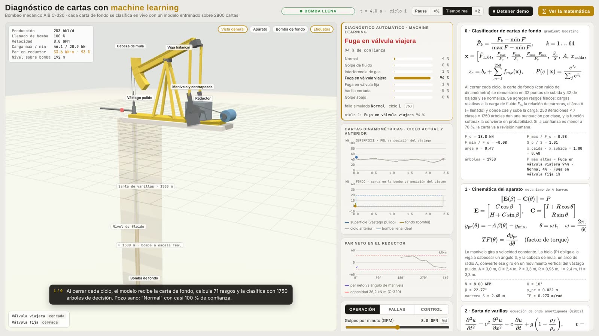
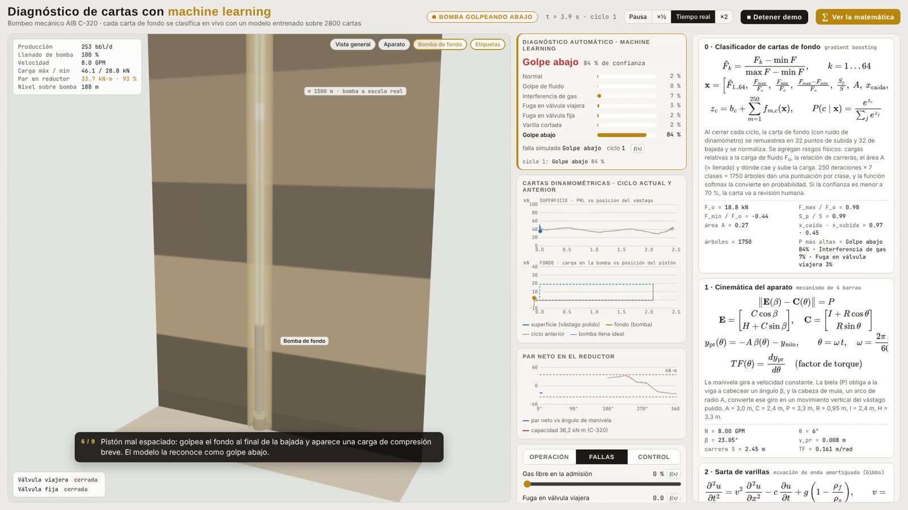

Oil & gas · producciónproduction
Diagnóstico automático de cartas dinamométricasAutomatic dynamometer-card diagnosis
Clasifica cada carta de fondo de un pozo con bombeo mecánico en 7 condiciones (golpe de fluido, gas, fugas en válvulas, varilla cortada, golpe abajo) y entrega la probabilidad. Las cartas dudosas van a revisión humana.Classifies each downhole card of a sucker-rod pumped well into 7 conditions (fluid pound, gas interference, valve leaks, parted rods, pump tagging) with probabilities. Uncertain cards go to human review.
98,7 %exactitud en pruebatest accuracy
96,7 %en pozos fuera de rangoon out-of-range wells
50 %reglas de ingeniero (base)engineer rules (baseline)
- La carta de superficie solo logra el 34 % fuera de rango: los datos confirman por qué la industria diagnostica con la carta de fondo.
- The surface card only reaches 34 % out of range: the data confirms why the industry diagnoses with the downhole card.
- 2800 cartas de un simulador con ecuación de onda y bomba con válvulas; cada etiqueta se valida con su física.
- 2,800 cards from a wave-equation simulator with a valve-level pump model; every label is physics-checked.